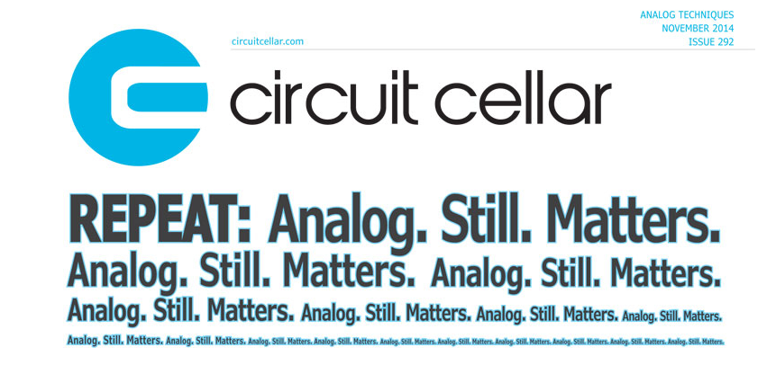
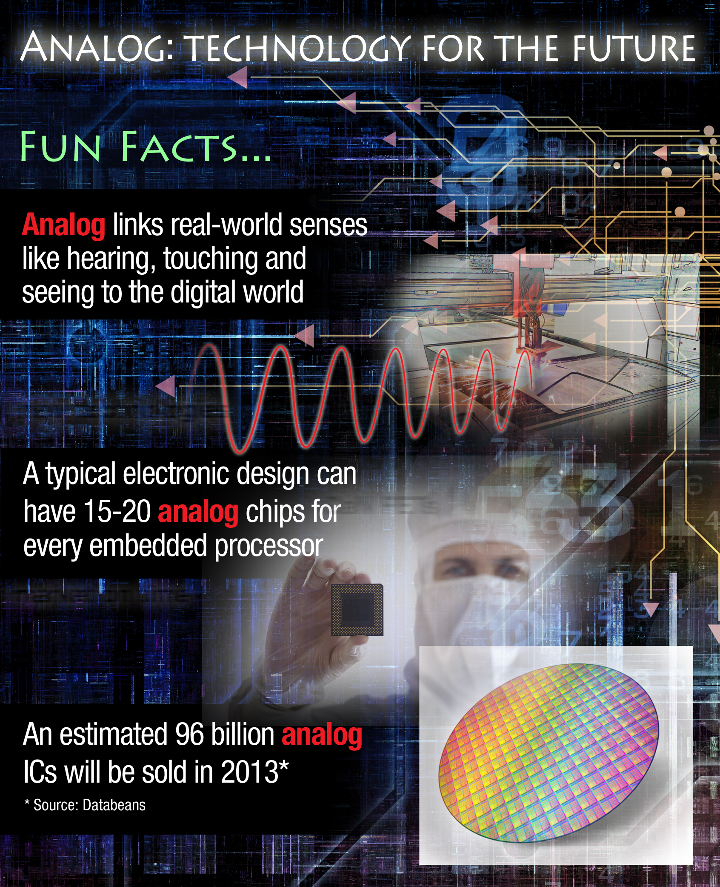

The (electronic) world is going Digital, why Analog?
- Note: If you have a suggestion for items or links to include in this list, do not hesitate to contact P. Kinget.
-
 "The World is Analog"
[P. Kinget, Circuit Cellar #292, 11/2014] (pdf) -
 "Engineering the world through Analog" (pdf)
[H. Cozanian, TI E2E Community, Analog Wire Blog, 06/2013]
Fun Facts:
- Analog links real-world senses like hearing, touching and seeing to the digital world
- A typical electronic design can have 15-20 analog chips for every embedded processor
- An estimated 96 billion analog ICs will be sold in 2013
- "Connecting Bits to Life" (pdf) [P. Kinget, Columbia Engineering, 10/2011]
-
"CES should thank 'Analog' -- and vice
versa"
[B. Schweber, PlanetAnalog, 01/2006]
- To all this digital multimedia we should add, 'thank you, analog.' If not for the multitude of analog and mixed-signal components that vendors have developed in the past decades, the digital media river would slow to a trickle. It takes countless A/D and D/A converters -- audio, video, RF -- to make it possible. It also takes basic small-signal amplifiers, audio through RF power amplifiers, disk-drive read/write circuitry, motor controls, line drivers and receivers, power-supply components, touch-screen interfaces, display drivers, thermal sensors and fan controls, and much more, to make the digital world possible.
-
"Immune from offshoring: DIGITAL CIRCUITS ARE ON OR OFF; `ANALOG
DEALS WITH THE
GRAY'"
[T. Poletti, Mercury News, 12/2005]
- Globalization and the rise of a tech economy worldwide often lead to images of Silicon Valley engineers and software developers being outsourced or offshored. But the analog engineer, long in high demand, is enjoying even more of a heyday as the world goes digital. They're largely immune from offshoring.
-
"Secrets of the Universe - or - Look What Happened to Analog While
Everyone Was Watching Digital," [Halla,
Electronics Manufacturing Summit, 04/2005]
- "...how analog technology is enabling the electronics industry to undergo fundamental change in the face of economic and technological challenges, the emergence of China, and the pursuit of new killer applications. Mr. Halla also addresses the increasing importance of Metcalfe's Law and the significance of personal technology and how it is displacing IT as the leading driver of semiconductor technology and manufacturing."
- "Interesting fact: There is more analog in a digital handset than in an analog one." [R. Nass, Commsdesign, 11/2005]
-
"Ironically, these new requirements for features in digital cell
phones are dictating the needs for new analog
functions." [D. Grant, "Pinpoint the
next big thing(s) in handsets", Mobile Handset Designline, 10/2005]
- "Examples include the analog image processing required to interface a multi-megapixel camera sensor to the digital processor, the audio and video playback DACs and amplifiers, LCD backlight controls, motion sensors, and the power-management and battery-monitoring/charging functions needed to maximize battery life while powering all the new features."
-
"Linear targets analog
shortage" [Electronic
News 10/2005]
- "Most companies believe it takes a decade or more of experience to create strong analog expertise, making those engineers highly valued for a variety of tasks. And with analog becoming increasingly important as an interface to the digital world, those engineers are increasingly in short supply"
- "It's a wiggly world out there. Analogue technology remains as important as ever." [Editorial, New Electronics, 09/2005]
- It's an interesting statistic that tells us that analogue ics hold the same market share today as they did in the early 1970s -- around 20%.
- "What the figures show is that analogue design remains as important a part of the electronics world as it ever has and should be treated accordingly."
- Analog is Everywhere
- Share your Analog Pride
-
"It's an Analog World. How Analog Engineers bring Digital
Designs to
Life." [Analog
Devices whitepaper 2005]
- "The more designs go digital, the more analog performance and value are required in every design to enhance the user experience."
- "New requirements for features in digital products are dictating the need for new and greater analog functionality."
-
"Design in an analog
world" [EDN 11/2004]
- "Analog-design talent has become harder to find and more expensive to develop at the same time that digital products and processes have hit constraints due to fundamental analog effects. ... the demands on analog design have actually grown with the advancement of digital technologies."
-
"Where the jobs
are" [IEEE Spectrum
01/2003]
- "One of the most sustained demands for EEs is in analog and mixed-signal design. Analog? Isn't that obsolete? The fact is, the more computerized the world becomes, the greater the need for interfaces between the analog and digital: cellphones need to convert voices to digital pulses and vice versa, video cameras need to change images into bytes, while monitors reverse the transaction. "
{kind=link}